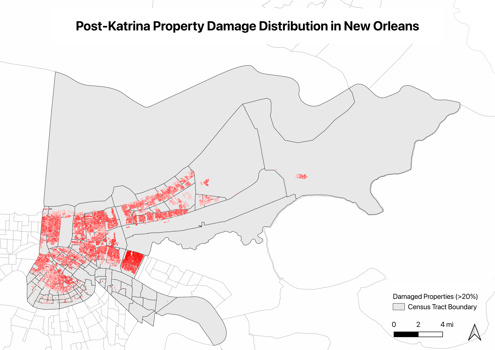
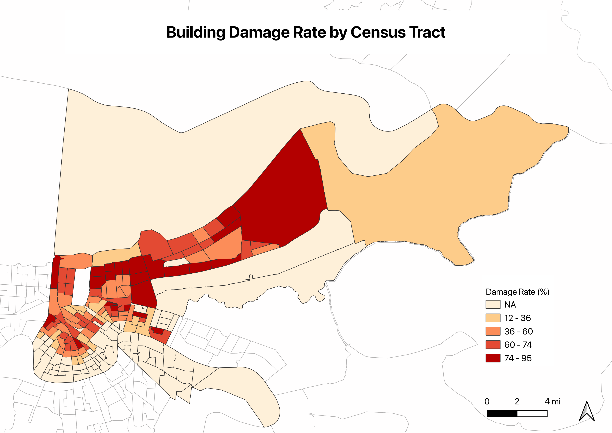
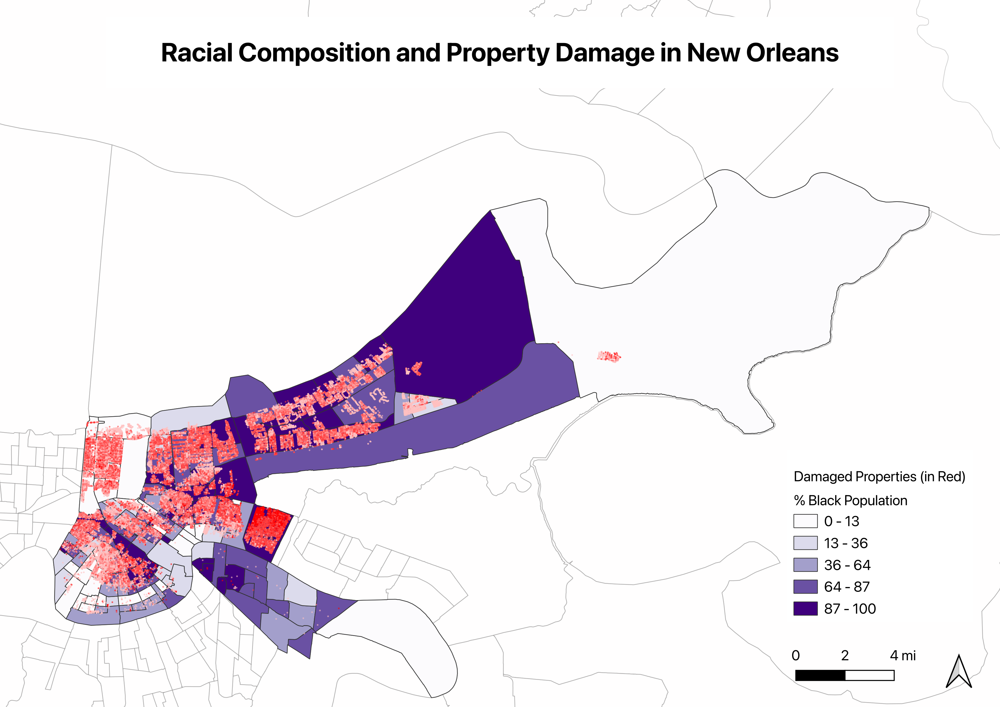
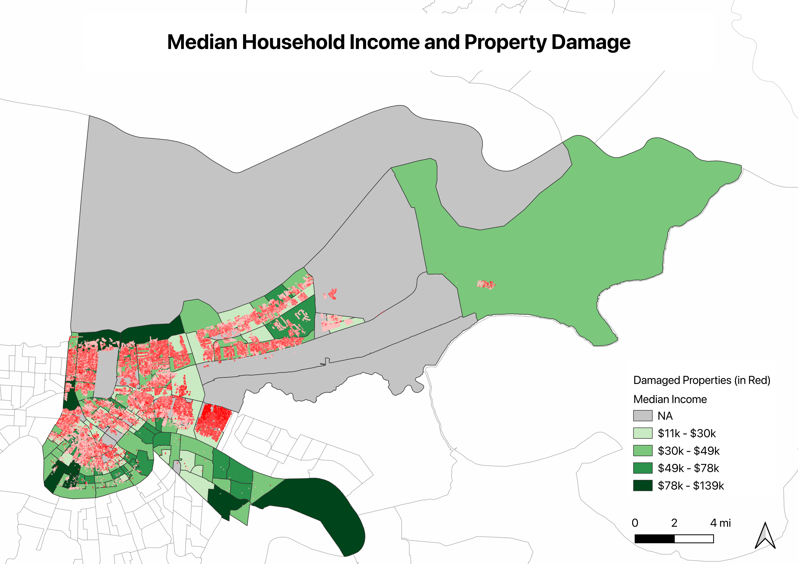
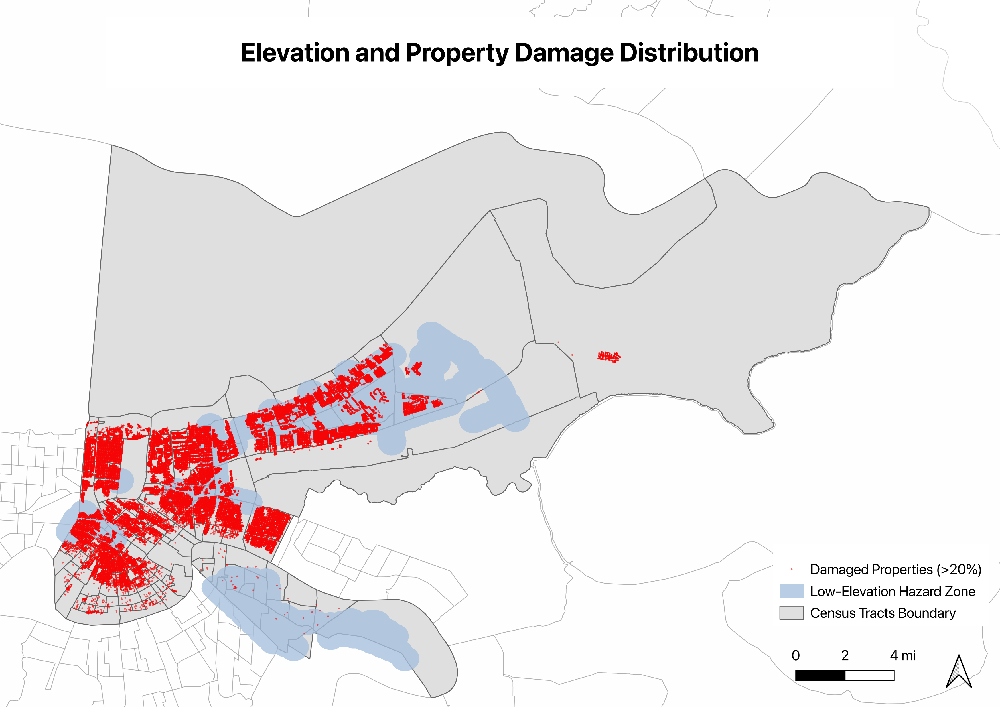
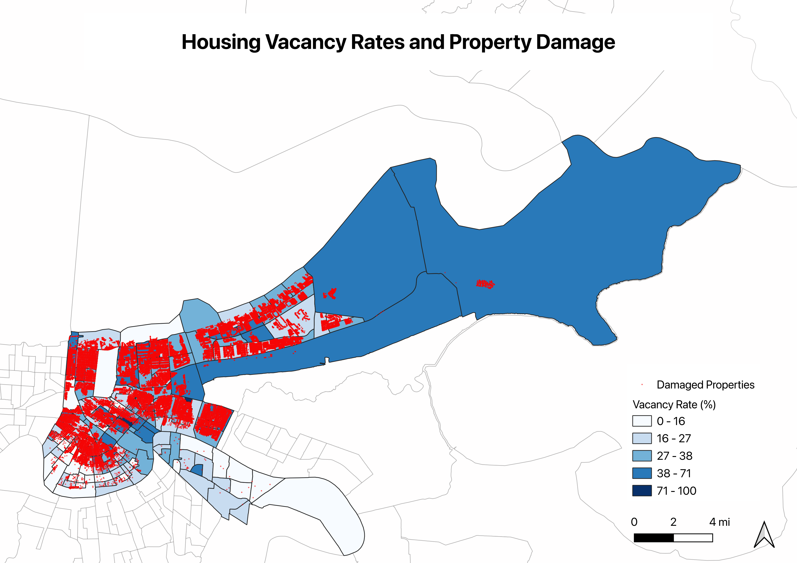

When Hurricane Katrina hit New Orleans on August 29, 2005, it didn’t destroy the city equally (Knabb, Rhome, and Brown 2005). Some neighborhoods were devastated, with 80%, 90%, even 95% of buildings damaged. Others, just a few miles away, emerged largely intact.
Using GIS spatial analysis and publicly available data, I mapped every significantly damaged property in New Orleans and overlaid it with census demographics. The patterns I found are consistent across every dimension I tested. Katrina’s damage was concentrated in predominantly Black, lower-income neighborhoods sitting below sea level, and twenty years later, many of those neighborhoods still haven’t fully recovered.
The Data
I analyzed 72,911 properties with significant structural damage at or above 20% of assessed value, out of 165,564 total assessed properties in New Orleans, which is roughly 44% of all buildings in the city. I combined this with:
- Census demographic data covering race, income, housing vacancy, and poverty from the American Community Survey 2006 to 2010 (U.S. Census Bureau 2010a)
- Building footprints for all structures in New Orleans
- FEMA Base Flood Elevation data classifying areas by elevation above or below sea level (Federal Emergency Management Agency 2006)
- Census tract boundaries dividing the city into 177 small neighborhood units (U.S. Census Bureau 2010b)
All 72,911 addresses were batch geocoded using the Census Bureau Geocoder (U.S. Census Bureau 2026), achieving a 99.2% match rate, then analyzed in QGIS using spatial joins, buffer analysis, and choropleth mapping.
Finding 1: The Geography of Damage

The damage was not random. It followed a clear geographic pattern, concentrated in central and eastern New Orlean.
When I calculated damage rates, measuring damaged buildings as a share of total buildings per census tract, the inequality became even sharper.

Across all 177 census tracts, the average damage rate was 38.2%. The hardest-hit tract lost 95.2% of its buildings. The lowest-damage tracts, mostly in the French Quarter and Uptown, had rates near 0%.
Finding 2: Race and Damage

The overlap between racial composition and damage is striking. Of the 177 census tracts, 111, or 62.7%, have a majority Black population, consistent with New Orleans citywide average of 61.2% Black. But the damage was not distributed equally across those tracts.
The five most heavily damaged tracts tell the story clearly.
| Census Tract | Damage Rate | % Black | Median Income |
|---|---|---|---|
| 22071001701 | 95.2% | 100% | $25,603 |
| 22071003301 | 87.8% | 32% | $51,982 |
| 22071003000 | 87.1% | 100% | $16,130 |
| 22071001723 | 86.2% | 90.9% | $32,240 |
| 22071002502 | 86.0% | 91.1% | $33,427 |
Four of the five most damaged tracts were 90 to 100% Black. The one exception, a 32% Black tract with a damage rate of 87.8%, is Lakeview, which flooded catastrophically when a flood barrier along the 17th Street Canal gave way. That case shows that elevation was also physical driver of destruction.
This does not mean race caused the flooding. It does show that racial composition and flood exposure were spatially correlated across New Orleans, and that the most heavily damaged neighborhoods were also among the most economically constrained before the storm hit.
Finding 3: Income and Damage

The income pattern reinforces the racial one. The five most damaged tracts had median household incomes between $16,130 and $33,427, well below the citywide average of $43,168, and four of the five fell below $35,000.
Lower-income residents faced a compounding burden: more damage, and fewer resources to rebuild. Many lacked flood insurance, savings, or the ability to temporarily relocate while repairs were made. The physical destruction and the financial capacity to recover from it were inversely correlated.
Finding 4: Elevation and the Physics Behind the Inequality

New Orleans is famously bowl-shaped, with large portions of the city sitting below sea level. The city relies on a network of flood barriers built along its rivers and lake shorelines to hold back water. When those barriers failed during Katrina, water rushed into the low-lying areas and could not drain. The physical geography made certain neighborhoods flood traps regardless of anything else.
To quantify this, I drew a 0.5-mile buffer around all below-sea-level areas and compared how damage distributed inside versus outside that zone.
| Zone | Damaged Properties |
|---|---|
| Inside low-elevation buffer | 33,528, or 46.4% |
| Outside low-elevation buffer | 38,771, or 53.6% |
Nearly half of all damaged properties fell within this buffer, despite it covering only a fraction of the city’s total land area. When combined with the earlier findings, this matters: the lowest-lying areas were also disproportionately home to Black and lower-income residents. Elevation risk and demographic concentration overlapped spatially.
Finding 5: Who Didn’t Come Back ?

The figure show that damage and abandonment correlate closely. Census tracts classified as high-damage had an average vacancy rate of 32.4%, compared to 23.6% for low or undamaged tracts, which is nearly 9 percentage points higher.
These empty homes represent families who left New Orleans after Katrina and never came back, displaced by damage they could not afford to repair, in neighborhoods that had lost their grocery stores, schools, and social fabric. Post-Katrina displacement reshaped the city’s demographics for a generation.
What could come next
One direction worth exploring is whether low median income tracts also correlate with low housing values. If the areas with the least wealth also have the lowest property values, that is precisely where targeted infrastructure investment would matter most. Better public services in those communities could reduce disaster exposure without triggering displacement because of rising costs.
Conclusion
Across the five dimensions I examined, racial composition, median income, elevation, and post-storm vacancy, the spatial patterns all pointed toward the same tracts with the highest damage rates. Tracts with higher damage rates tended to have higher shares of Black residents, lower median incomes, and higher vacancy rates after the storm. These variables were not randomly distributed across the city. They systematically occurred in the same geographic areas.
Physical data alone tells us where destruction happened. Layering demographic information onto that reveals who absorbed the damage, who had fewer resources to recover, and where the next disaster will hit hardest. The methodology here can be applied to any city where that data exists, and Indonesia could be one of those places.
Growing up in Indonesia, I have watched flooding described in aggregate numbers. I even experienced some during my childhood. However, I have never known which neighborhoods absorbed most of the damage, or whether some communities struggled to recover more than others.
In November 2025, severe flooding and landslides struck North Sumatra following a cyclone in the Malacca Strait, killing over 800 people and affecting more than 3.2 million. As Palaon writes, Indonesia’s response followed a familiar pattern of reactive crisis management rather than addressing the underlying conditions, including watershed degradation and unenforced spatial planning laws, that made communities so exposed in the first place (Palaon 2025).
Katrina reveals that disaster outcomes are rarely just about the storm. It also shows how damage maps onto existing community structures, and whether neighborhoods had the political and economic weight to demand recovery. The analysis I did here was possible because New Orleans had the data infrastructure to support it. On the other hand, Indonesia, which experiences disasters of this scale regularly, don’t yet have that same infrastructure of geocoded addresses, granular demographic data, and standardized damage assessments, the kind of spatial analysis I did here remains difficult to replicate.
That gap matters. Spatial analysis offers a way to move from reactive crisis response to anticipatory planning, geocoding addresses, joining demographic layers, mapping who lives in flood-prone areas before the next event. Countries like Indonesia, where disaster exposure is high and recovery capacity is often limited, stand to gain the most from this kind of work. Not because GIS tools are new, but because the questions they let us ask are exactly the ones that reactive crisis management skips over.
Methods
Tools: QGIS 3.x, Python with pandas and numpy
Techniques: Batch geocoding via Census Bureau Geocoder, point-in-polygon spatial joins, buffer analysis, choropleth mapping, damage rate normalization
Limitations:
- Geocoding match rate was 99.2%, meaning 612 addresses could not be converted to coordinates.
- The damage assessment reflects structural damage only, not contents, personal losses, or psychological impact.
- ACS data are estimates with margins of error, especially for small-population tracts.
- Correlation between demographics and damage does not imply causation. Elevation is the primary physical driver, and racial and income patterns reflect where different communities lived relative to flood risk.
- One census tract produced a calculated damage rate above 100%, specifically 167%, which indicates incomplete building footprint coverage, likely because heavily damaged or demolished structures are missing from the dataset. This value was capped at 100% in the analysis.
Structure and grammatical editing was assisted by Claude (Anthropic).